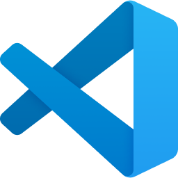

Jinda Operations
Windows 11 Pro inrichten: optioneel 15 apps installeren, Windows naar Engels (VS) met US-International en optioneel toegang op afstand via het LAN.
Plak deze ene regel in PowerShell en accepteer de Windows-vraag om administratorrechten. Kies aan het begin apps installeren, Remote Desktop en WinRM: y/n (zo nodig ook het LAN). Daarna loopt alles zonder verdere vragen door.
& { $ErrorActionPreference = "Stop"; $p = "$env:TEMP\jinda-$([guid]::NewGuid().ToString('N'))"; iwr https://github.com/acurvers/jinda-operations/archive/refs/heads/main.zip -UseBasicParsing -OutFile "$p.zip" -TimeoutSec 60; Expand-Archive -LiteralPath "$p.zip" -DestinationPath $p; powershell.exe -NoProfile -ExecutionPolicy Bypass -File "$p\jinda-operations-main\init.ps1" }Bij WinGet-fouten: eerst WinGet herstellen, daarna installeren en configureren.
& { $ErrorActionPreference = "Stop"; $p = "$env:TEMP\jinda-$([guid]::NewGuid().ToString('N'))"; iwr https://github.com/acurvers/jinda-operations/archive/refs/heads/main.zip -UseBasicParsing -OutFile "$p.zip" -TimeoutSec 60; Expand-Archive -LiteralPath "$p.zip" -DestinationPath $p; powershell.exe -NoProfile -ExecutionPolicy Bypass -File "$p\jinda-operations-main\init.ps1" -RepairWinGet }De scripts gebruiken administratorrechten en kiezen de nieuwste aanwezige stabiele PowerShell 7+. De Windows-configuratie gebruikt intern Windows PowerShell 5.1.
Apps
- Google Chrome
- TeamViewer
- PowerShell 7 (nieuwste stabiele versie)

Visual Studio Code (met PowerShell-extensie)- OneNote
Notepad++
- Discord (tijdelijk uitgeschakeld)
- Reolink Client
- Paint.NET
LastPass
Git Bash
Zoom
Microsoft Teams (tijdelijk uitgeschakeld)
- VLC
Everything (bestanden zoeken)
- Yodeck Player